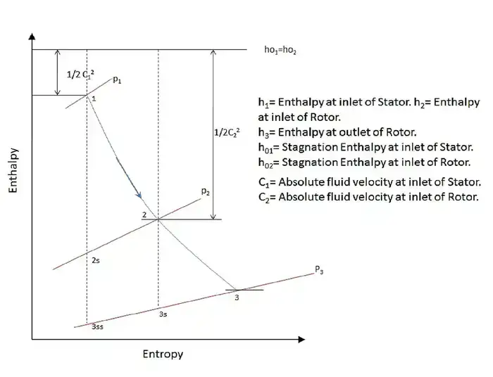
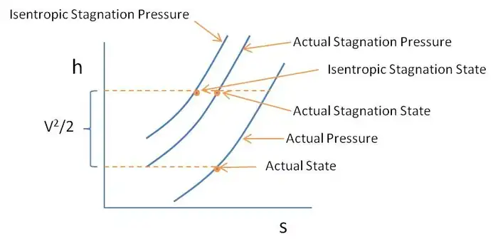
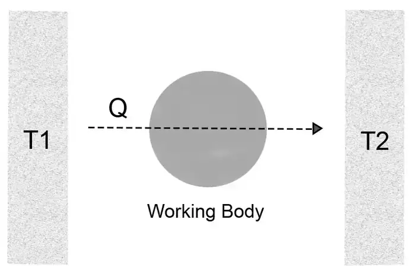

The puzzle
Newton's laws, Maxwell's equations, Schrödinger's equation and general relativity are all invariant under time reversal, with the small exception of the weak interaction's CP violation, which is far too small to explain everyday irreversibility.
Maps, diagrams and images






Yet entropy increases, memories exist, causes precede effects, and eggs do not unscramble. Boltzmann's statistical mechanics explains the increase: there are vastly more disordered arrangements than ordered ones, so a system wanders into disorder. But that argument is time-symmetric too — it works just as well predicting disorder in the past.
The past hypothesis
The standard answer, associated with Boltzmann and sharpened by David Albert and others, is that the universe started in an extraordinarily low-entropy state. Given that starting point, entropy increases in both directions away from it, and we live downstream.
This works, and it moves the question rather than answering it. Why was the early universe so smooth and so low in entropy? Gravity makes this worse: a uniform gas has low gravitational entropy, so the nearly-uniform early universe is a very special state, and inflation is supposed to explain how it got that way — without a fully accepted account of the entropy accounting.
Settled: the thermodynamic arrow is real and statistical; the second law is not a fundamental law but a consequence of initial conditions plus counting.
Settled: quantum measurement does not create the arrow. Decoherence is also time-symmetric.
Open: why the initial condition was what it was. This connects to the cosmology pages and to quantum gravity, and there is no consensus answer.
Misused: the arrow is often invoked to 'prove' that the past exists, that time is an illusion, or that retrocausation is impossible. None of those follows from the physics.
Why it is in the archive
Because it is a genuine unsolved problem that gets sold as a solved one in both directions — mystics claim physics has proved time is unreal, and some popularisers claim the whole thing is just statistics and there is nothing left to explain.
The honest statement is narrower: the asymmetry we observe follows from a special initial condition, and the origin of that condition is an open question in cosmology.
Sources for this page
- Wikipedia, “Arrow of time” — thermodynamic, cosmological and quantum arrowsen.wikipedia.org
- Stanford Encyclopedia of Philosophy, “Thermodynamic Asymmetry in Time”plato.stanford.edu
- Carroll & Chen (2004), spontaneous inflation and the origin of the arrow of timearxiv.org
- Wikipedia, “Loschmidt's paradox” — the reversibility objectionen.wikipedia.org
Open resources on this topic
- BookThe Arrow Of Time And The Wheeler Feynman Time Symmetric Theory — James Conor O'Brien · 2023 (Internet Archive, free to read)
- BookExpansion of the universe : source of the arrow of time — Leffert, Charles B., 1922- author · 2011 (Internet Archive, free to read)
- BookOn the Arrow of Time — ['Y. Charles Li', 'Hong Yang'] · 2012 (Internet Archive, free to read)
- PapersOpen-access articles: DOAJ · PubMed Central · Internet Archive Scholar
- BooksPublic-domain and borrowable copies: Open Library · Project Gutenberg · Google Books
Cite this page
Momin, S. (2026). The Arrow of Time. The Larger World Archive. https://drsamonline.github.io/LARGE_GLOBE/arrow-of-time.htmlMomin, Sohil. “The Arrow of Time.” The Larger World Archive, 2026, https://drsamonline.github.io/LARGE_GLOBE/arrow-of-time.html.Momin, Sohil. “The Arrow of Time.” The Larger World Archive, 2026. https://drsamonline.github.io/LARGE_GLOBE/arrow-of-time.html.@misc{the2026arrow,
author = {Momin, Sohil},
title = {The Arrow of Time},
year = {2026},
howpublished = {The Larger World Archive},
url = {https://drsamonline.github.io/LARGE_GLOBE/arrow-of-time.html},
note = {Last reviewed 20 November 2026}
}Last reviewed 20 November 2026 · Corrections policy · this page is not peer reviewed